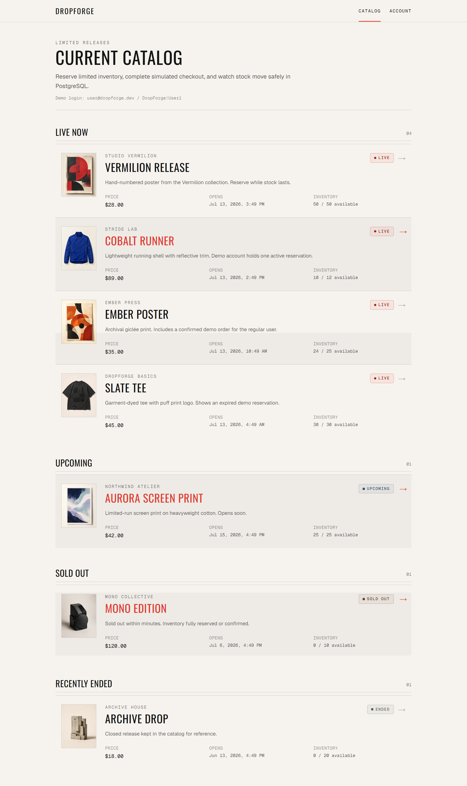

DropForge
A limited-inventory marketplace with temporary reservations, simulated checkout, expiration handling, cancellation, order creation, and automatic inventory restoration.
Engineering FocusTransactional inventory consistency
- Built reservation and checkout workflows with Java, Spring Boot, Spring Data JPA, and PostgreSQL.
- Used database constraints and transactional service logic to preserve inventory consistency across reservation, expiration, cancellation, and checkout flows.
- Deployed the Spring Boot API and PostgreSQL on Railway and the Next.js frontend on Vercel.
81 backend tests
49 frontend tests
Live production deployment
- Java
- Spring Boot
- PostgreSQL
- Next.js
- Docker
- Railway
- Vercel
The provided repository URL currently returns 404.